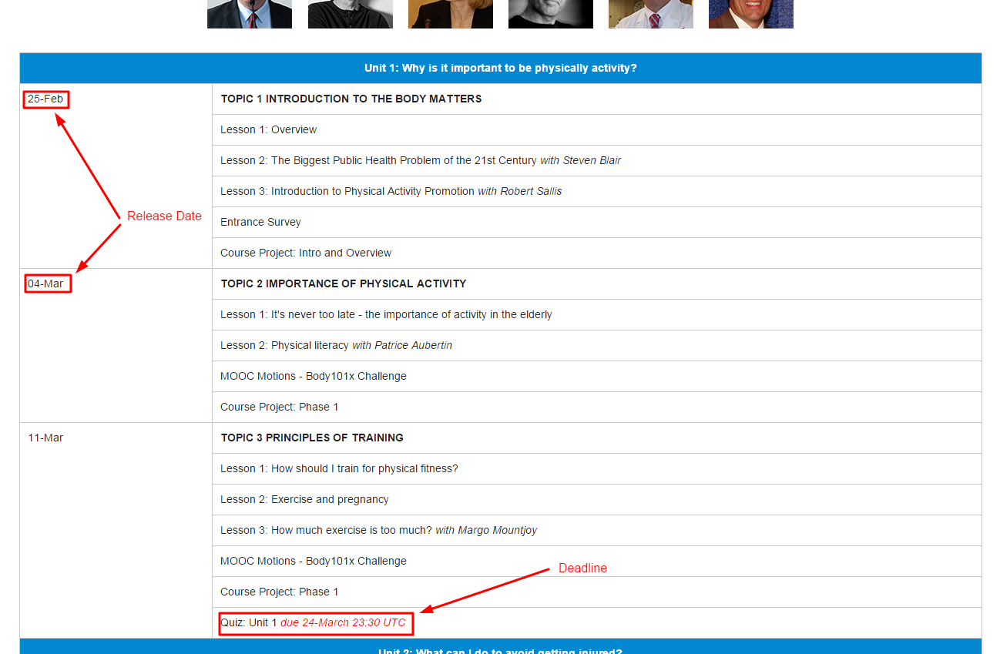
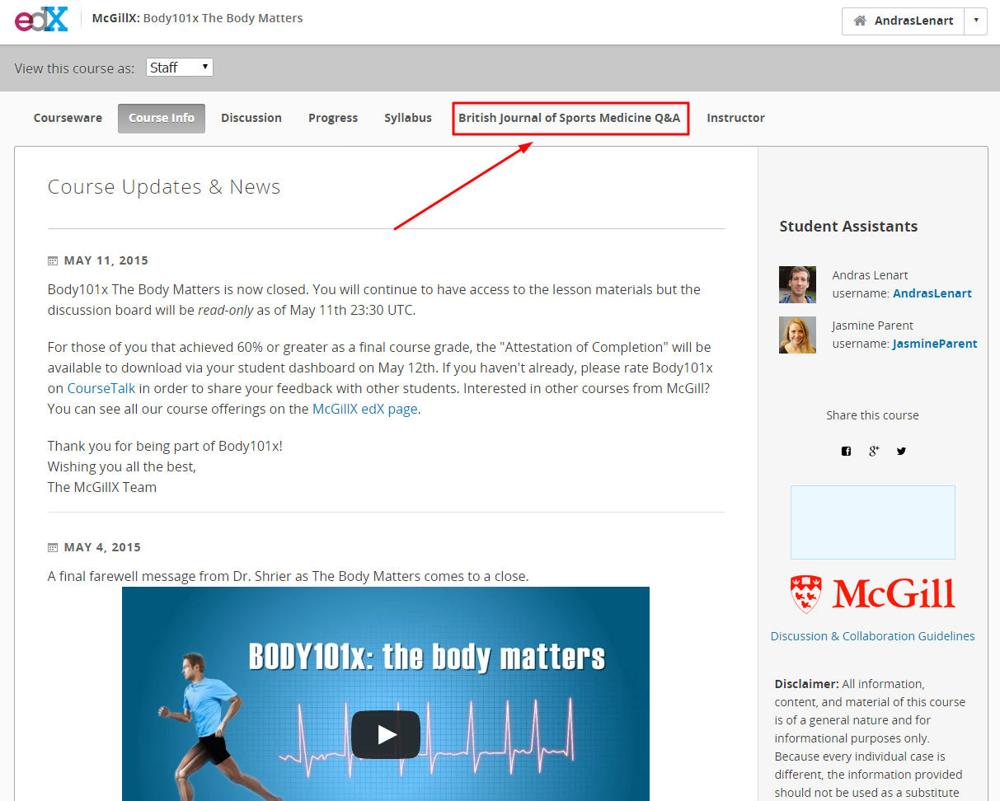

Navigation¶
Courseware¶
In the courseware tab, you will find the lessons, assignments, additional materials, questions and comments.
Progress¶
In the Progress tab, students are able to look at their scores. Students may be unclear about the grading scheme, which is explained in the syllabus.
Syllabus¶
The syllabus has course topic descriptions as well as the due dates. Refer students to the syllabus if they ask about assignment or quiz due dates, or complain about having missed a due date. The syllabus also includes a description of the grading scheme for the course.
Discussion¶
This tab serves as a space for students to ask questions and collaborate.
Course Release Schedule¶
The syllabus states the course release schedule on the left hand side. The deadlines are in the right hand column.

Additional Tabs¶
Some courses may have additional supplementary pages that are linked to from the main menu bar. For example, Body101x had a link to a Q&A Section that was done in collaboration with the British Journal of Sports Medicine.

Graded versus ungraded problems¶
Polls, word clouds, and surveys are ungraded. Other forms of questions are typically graded, review the syllabus for specifics.